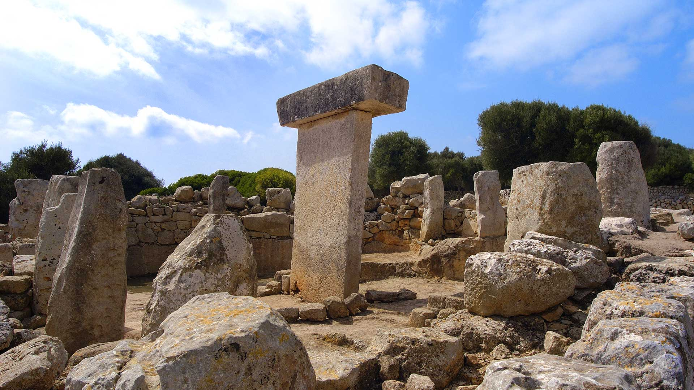

Informacion General
En el poblado de Torralba d'en Salort se encuentra la mesa más destacada de la isla de Menorca, de proporciones esbeltas y fabricación esmerada.
El poblado talayótico de Torralba d'en Salort está compuesto por dos talayots, una sala hipóstila, restos de lugares de viviendas y un recinto con la mesa, que es el elemento más destacado.
Con una planta en forma de herradura, en el interior se llevan a cabo rituales de culto relacionados con la fertilidad de los campos, ganado y personas. Se ha documentado el sacrificio de pequeños animales (ovejas, cabras, cerdos) que se ofrecían a la divinidad , probablemente representada en la mesa.
Esta mesa es la mejor conservada de toda la isla y la única orientada al este. Está construida con dos grandes bloques de piedra muy cortados y tiene una altura de 5 m. A la izquierda de la mesa hay un altar en el que se encontró una pequeña estatua de un toro de bronce junto a dos figuras de terracota que representan a la diosa Deméter, lo que refuerza la idea de que se rendía culto a las fuerzas divinas vinculadas a la fertilidad .